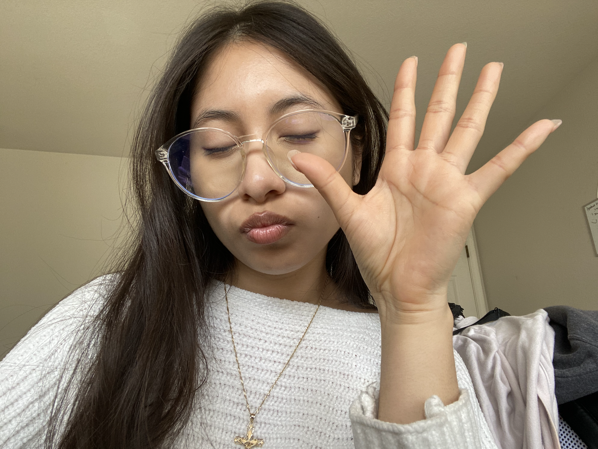

Precious's Introduction
About me
 Hi, my name is Precious Garcia
(she/her)
I am 21
I am a 4th yr APGM major.
I am an open minded
person.
I am from elk grove Sacramento.
I enjoy both stem and art
likes
Drawing digital art
Learning UX UI
Trying new foods
K r&b music
loves Chiikawa
scary movies
K-dramas
dentistry
sunny weather
3 Fun facts
I like collecting cute figures just to display them alongside plants.
My dream pet is a chow chow!
I constantly look at memes.
Labs
- Lab 2: HTML & CSS starter
- Lab 3: File Structure and file transfer
- Lab 4: Pseudocoding and problem solving
- Lab 5: Data types and variables
- Lab 6: Arrays and Objects
- Lab 7: Functions
- Lab 8: Anon Fuctions and Callbacks
- Lab 9: Libaries and jQuery
- Lab 10: Javascript for the web
- Lab 11: Javascript Events and Forms
- Lab 12: Conditionals
- Lab 13: Loops
- Lab 14: Degugging tools & strategies
- Lab 15: AJAX
- Lab 16: JSON and API
- Lab 17: You Tell Me